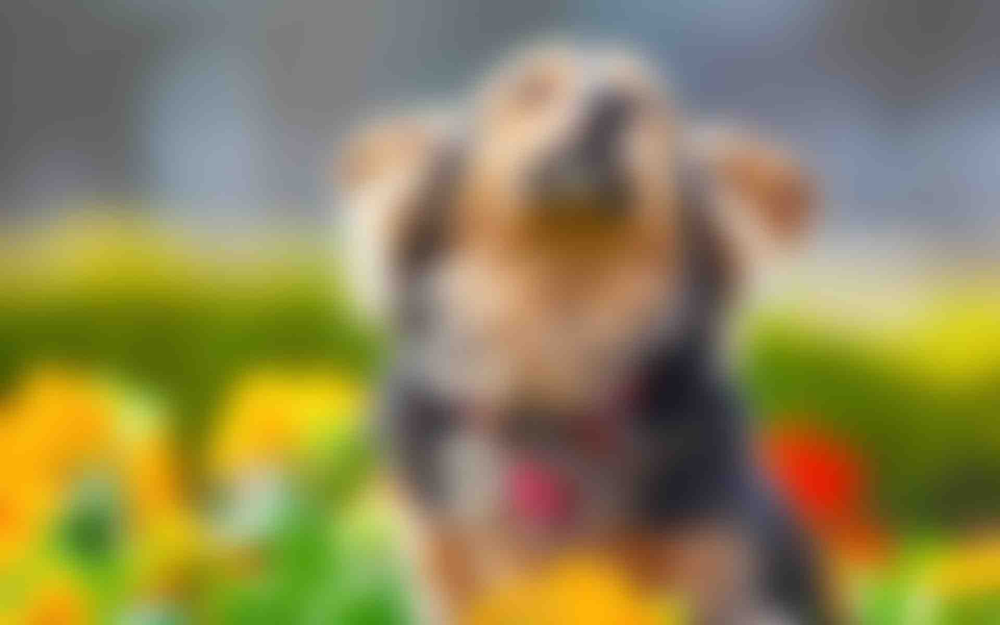

Ископаемые остатки доисторических собак найдены в человеческих пещерах по всему миру.
Ранее на основании археологических находок чаще всего учёными назывались даты одомашнивания собак 13—15 тыс. лет до н. э.[30]
Сейчас ряд исследователей считает, что собаку приручили ещё в начале верхнего палеолита представители ориньякской культуры.
Так, палеонтологи Королевского музея естествознания[fr] Бельгии во главе с Митье Жермонпре (Mietje Germonpré) указывают дату 31,7—36,5 тыс. лет до н. э. Эти выводы сделаны на основании последних находок, остатков доисторической собаки в пещере Гойе (Goyet). Примечательно, что строение черепа доисторических собак значительно отличается от доисторических волков.
